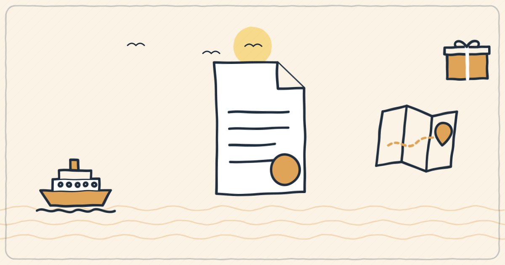

Mailing Postcards From a Cruise: Stamps, Ports, Timing

You can, but the ship is not a post office. Postcards go ashore at a port and enter that country's mail, so they need that country's stamp. Hand them to guest services, who send them from an upcoming port, or post them yourself ashore. Allow one to three weeks from Alaska or the US and longer from the Caribbean.
A postcard from a cruise has to touch land before it goes anywhere, and that single fact explains everything else: the stamp has to belong to the country where the card is posted, the ship can only pass it along, and delivery depends on which country's mail you dropped it into. Get those three things right and the card arrives, usually a week or two after you are home, which is part of the appeal.
Is there a post office on a cruise ship?
No. What most ships offer is a collection point, usually the guest services desk, where you can leave stamped mail. Crew bag it and take it ashore at the next port with a dependable postal service, where it joins that country's outgoing international mail.
Two things follow from that. The ship cannot postmark anything, so your card carries the postmark of wherever the bag was emptied. And you need to ask which port that will be, because that decides which stamp to buy.
A few ships sell stamps for the next port at the desk; many sell postcards in the shop but no stamps at all. Ask on embarkation day rather than on the last sea day.
Which stamp does a cruise postcard need?
The stamp must come from the country whose mailbox the card goes into. Where you bought the card, where you live and where the ship is registered are all irrelevant.
| Card goes into the mail in | Use | Rough cost at recent rates |
|---|---|---|
| Canada (Vancouver, Quebec City, Halifax) | Canadian stamp | About C$1.25 within Canada; roughly C$3 abroad |
| Alaska, Hawaii, Seattle, Florida ports | US stamp | A little over US$0.60 within the US; about US$1.70 international |
| Puerto Rico, US Virgin Islands | US stamp, same rates as the mainland | As above |
| Mexico, Jamaica, Bahamas, other Caribbean | That country's stamp, bought at a post office or shop ashore | Varies; often a dollar or two |
| Europe | That country's stamp, often sold at tobacconists and newsstands | Varies by country |
| Left with guest services | Stamp for the port they name | Ask the desk |
Where to post cards in popular cruise ports
- Alaska. Juneau, Ketchikan and Skagway all have post offices within a short walk of the cruise docks, with international stamps at the counter. This is the most reliable mail on any North American itinerary.
- Vancouver, Victoria, Halifax, Quebec City. Canada Post boxes are everywhere downtown. On a round trip from Vancouver, you can post Canadian-stamped cards before boarding or the morning you return.
- Florida and Seattle. Blue USPS boxes near the terminals; buy stamps before you arrive, since terminal shops rarely sell them.
- San Juan and St. Thomas. US mail, US stamps, ordinary speed.
- Nassau, Cozumel, Montego Bay, Grand Cayman. Post offices exist near the piers, but delivery to North America is slow and uneven. Treat it as a gamble with a nice postmark.
- Mediterranean and Northern Europe. Buy stamps where you buy the card; the yellow or red postboxes are reliable, and cards reach Canada and the US in one to two weeks.
If your port time is short, a post office stop is one more thing competing with the day's plan, which is one reason how many shore excursions to book matters.
How to send postcards from a cruise, step by step
- Buy cards in the first port rather than the ship's shop; they are usually cheaper and more varied.
- Pick up stamps at the same time, for that country, in the quantity you need.
- Address them on the next sea day, with the full country name on the last line.
- Post them at the next stop in the same country, or hand them to guest services if you are leaving that country before you find a postbox.
- Tell the recipients a card is coming, and that it will be slow.
Why do postcards from a cruise take so long?
A card given to the ship waits until the next port with a good postal link, then goes through that country's international sorting, a flight, and the destination country's sorting before a mail carrier ever sees it. From Alaska to Canada, one to three weeks is typical. From the Caribbean or Mexico, four to six weeks is common, and a small percentage vanish.
None of that makes the card less of a souvenir. A foreign stamp and a Cozumel or Skagway postmark are the point; the news inside is a bonus.
Faster ways to send a card from a cruise
If the arrival date matters more than the postmark, postcard apps print your own photo on a card and mail it from a facility in your home country, often for a few dollars. They need only a minute of ship wifi, and the card arrives in days rather than weeks. For gifts bought on board or ashore to bring home instead, cruise ship duty-free rules covers what you can carry back.
Want this checked for your own sailing? A licensed cruise consultant can price it up and answer questions for free, with no obligation.
Ask a cruise expert →A small ritual worth keeping
Match the stamp to the country, post ashore when you can, and accept that the card will beat you home only if you post it in your own country. Everything else about the tradition is slow on purpose.
Still wondering?
Does a cruise ship have a mailbox?
Not in the sense of a box emptied daily at sea. Most ships let you leave stamped mail at guest services, which goes ashore in a bag at the next suitable port. Some ships sell stamps for that port; many do not, so ask on day one.
Can I use Canadian or US stamps on a postcard from a cruise?
Only if the card enters that country's postal system. A Canadian stamp works in Vancouver before boarding or after you return; a US stamp works in Alaska, Hawaii, Puerto Rico and the US Virgin Islands. Anywhere else, you need local stamps.
How long do postcards from a cruise take to arrive?
From Alaska or a US port, one to three weeks to Canada and about a week within the US. From Mexico and much of the Caribbean, several weeks is normal and a few never arrive. From Europe, roughly one to two weeks to North America.